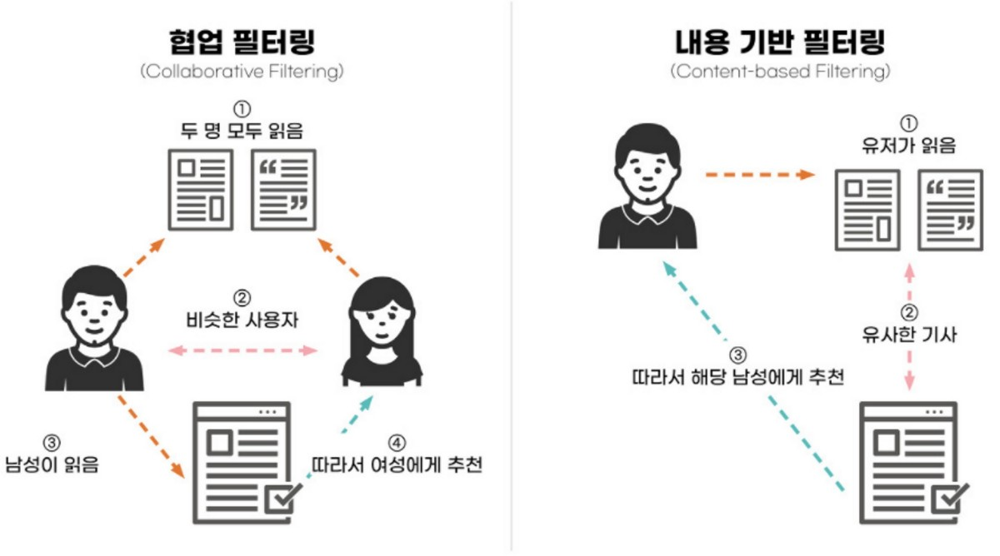
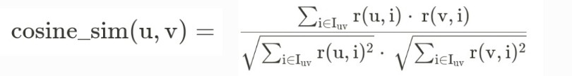
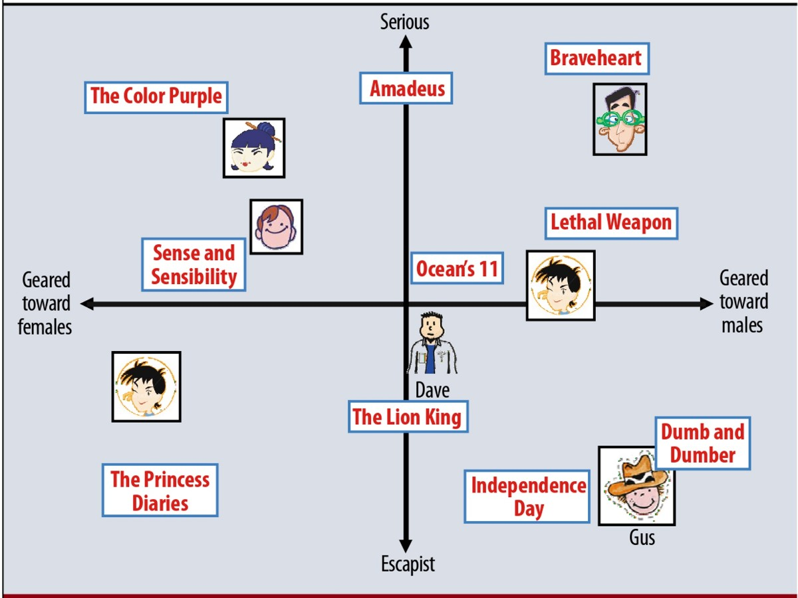

출처:https://deepdaiv.oopy.io/articles/1
우리는 평소 알고리즘을 이용하여 여러 가지 추천을 받습니다. 그렇다면 알고리즘은 도대체 어떤 원리로 추천하는 걸까요?내용 기반 필터링 모델
내용 기반 필터링 모델은 내용만을 활용하여 추천해주는 알고리즘입니다. 쉽게 말하면 알고리즘 사용자가 좋아하는 콘텐츠를 분석하여 그와 유사한 콘텐츠를 추천해주는 기술이라고 할 수 있습니다. 만약 사용자가 "All I want for Christmas is you"를 들으면 알고리즘은 그 내용을 기반으로 사용자에게 겨울 관련 노래를 추천해줍니다.
협업 필터링 모델
협업 필터링 모델은 다른 사용자들로부터 취향 정보들을 모아 사용자의 관심사를 예측하는 알고리즘입니다. 비슷한 취향을 가진 사용자들은 어떠한 아이템에 대해 비슷한 선호도를 가질 것이라는 가정하에 사용자와 아이템 간 상호 작용 데이터를 활용합니다. 예를 들어 캐롤을 좋아하는 사용자가 유사하게 판타지 영화에 대한 높은 선호도를 보인다면 "해리포터"를 추천할 수 있죠!
내용 기반 필터링 모델과 협업 필터링 모델은 상호보완적인 역할을 합니다. 새로운 아이템이 출시되었을 때는 아이템을 사용한 사용자의 데이터가 없기 때문에 협업 필터링 모델을 사용하기 어렵지만 내용 기반 필터링 모델에서는 텍스트나 이미지 유사성 기반의 추천이 가능합니다. 또한 협업 필터링 모델에서는 사용자와 아이템 간의 상호작용을 바탕으로 하기 때문에 텍스트/이미지 기반 유사성이 높지 않더라도, 사용자가 함께 구매한 아이템 추천 가능합니다. 참 유용하죠?
그 중 협업 필터링 모델을 자세히 알아봅시다.
협업 필터링 모델은 메모리 기반 접근 방식과 모델 기반 접근 방식으로 나눌 수 있습니다.
메모리 기반 접근 방식
메모리 기반 접근 방식은 가장 전통적인 접근 방식이며 유사도를 기반으로 동작합니다. 사용자 간 유사도를 기준으로 하는 경우에는 사용자 기반 추천이고 아이템 간 유사도를 기준으로 하는 경우에는 아이템 기반 추천입니다.
사용자 기반 추천은 비슷한 성향을 지닌 사용자들을 그룹화하여, 그룹이 선호하는 상품을 해당 그룹에 속한 사용자에게 추천합니다.
아이템 기반 추천은 사용자가 이전에 구매했던 아이템을 기반으로 그 상품과 유사한 다른 상품을 추천하는 방식으로 상품 간 유사도는 함께 구매되는 경우의 빈도를 분석하여 측정합니다.
위에서 언급된 두 벡터 간 유사도를 구하는 방법으로는 코사인 유사도(Cosine Similarity)와 피어슨 유사도(Pearson Similarity)가 있습니다. 그 중 코사인 유사도를 간단히 알아봅시다.
코사인 유사도는 두 벡터의 코사인 각도를 계산하여 유사성을 측정합니다. 두 벡터가 서로 가까우면 각도가 작아서 값이 1에 가까워져 유사하다고 하고, 두 벡터가 서로 대척되면 각도가 커져서 값이 -1에 가까워져 유사하지 않다고 합니다.
- 사용자 u와 사용자 v간의 코사인 유사도
모델 기반 접근 방식
모델 기반 접근 방식은 기계 학습을 통해 사용자 또는 아이템의 숨겨진 특성 값을 계산하는 방식입니다. 잠재요인을 이용한 Latent Factor 방식과 Classification/Regression(분류/회귀)방식이 있습니다.
Latent Factor 모델, 즉 잠재요인 협업 필터링 모델은 사용자와 아이템을 잠재적인 차원(Factor)들을 사용해 나타낼 수 있다고 가정하는 모델입니다.
여기서의 차원은 축(axis)과 같은 의미로 사용됩니다. 위 예시에서는 사용자와 아이템을 x축과 y축의 두 가지 차원으로 표현했지만 실제 Latent Factor 방식에서는 차원이 무엇을 의미하는지 알 수 없으며, 차원의 개수 또한 여러개일 수 있습니다. 그렇기 때문에, 사용자와 아이템의 위치가 가까울수록 유사하다고 판단합니다.
Classification/Regression 방식(분류/회귀)은 내용 기반 추천 방식과 쉽게 융합 가능합니다. 특징 x가 주어졌을 때, 라벨 y를 예측하는 구조이기 때문에, 피드백 y를 예측하는 상황에서, x에 내용 관련 정보를 특징으로 만들어서 추가하면, 피드백 데이ㅣ터뿐만 아니라 내용 데이터를 활용한 추천이 가능해집니다. 구체적으로 Classification은 유저의 성향에 따라 군집을 분류하여 성향이 부여된 군집에 맞추어 아이템을 추천해주는 방식이고, Regression은 유저와 아이템에 대한 평균 평점을 구하는 모델을 통해 새로운 카테고리에서 예측값을 예측하여 추천하는 방식입니다.